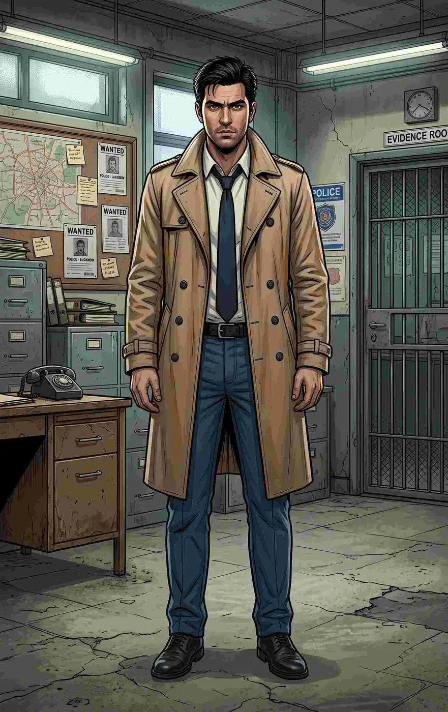
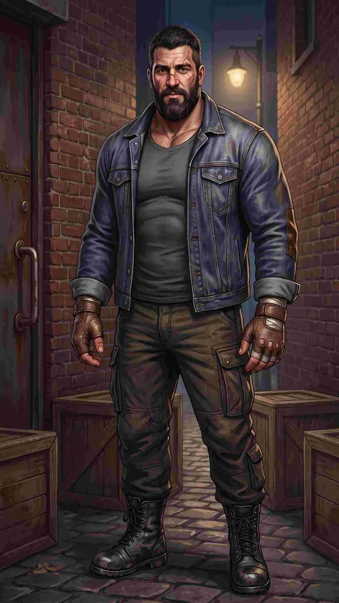
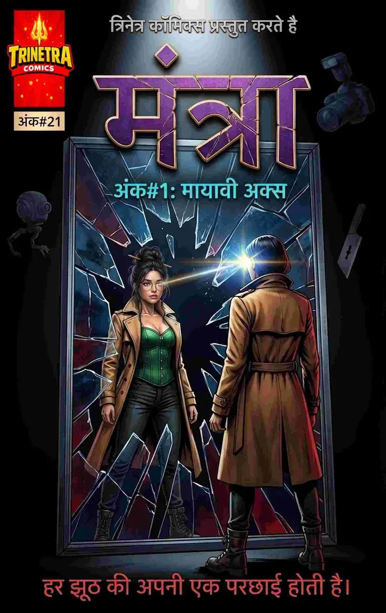

Kinesic Telepathy
Processes micro-expressions, pupil dilation, muscle tension and skeletal shifts at superhuman speed to deduce thoughts, spot lies and predict movement.

THE IMPOSSIBLE CRIME SOLVER
THE IMPOSSIBLE CRIME SOLVER
Mantra Mishra is Mumbai’s brilliant and eccentric private detective, famous for solving impossible crimes. Her Kinesic Telepathy reads bodies rather than minds, while her Memory Palace reconstructs crime scenes with extraordinary precision.
Processes micro-expressions, pupil dilation, muscle tension and skeletal shifts at superhuman speed to deduce thoughts, spot lies and predict movement.
A flawless photographic memory that lets her mentally reconstruct crime scenes from physical evidence and physics.
A dormant Trinetra Particle in her left pupil can reveal perfect illusions, digital manipulation and eventually dimensional anomalies.
Predictive sight combined with Krav Maga and Marma Kalari enables pinpoint nerve strikes.
Knows exactly which psychological pressure points to exploit.
A cyber-noir detective mind built for impossible cases.
A discreet heavy-duty pen used for precise nerve strikes.
Hide her eye movements and filter harsh lighting.
Lightweight high-tensile Kevlar mesh protects vital organs.
Crowds and chaotic situations can cause severe migraines and disorientation.
She remains physically human and can be seriously injured by attacks she cannot evade.
Her hyper-analytical mind makes ordinary human connections difficult.
Sharp aristocratic Indian features, strong jawline, fair skin, piercing dark eyes and dark hair worn flowing or in a tight combat bun.
A camel-colored flowing trench coat over an emerald armored corset, gold kamarbandh, dark tactical trousers, high-heeled combat boots and wire-frame aviators.

THE PERSON BEHIND THE HERO
Mantra works publicly as an elite private investigator and consultant. Inspector Avinash represents the practical law-enforcement world that intersects with her extraordinary methods, while Sam serves as her steadfast physical shield.
SUPPORTING CHARACTER
A practical and highly trained Mumbai police officer who balances Mantra’s unconventional methods.

SUPPORTING CHARACTER
Mantra’s huge, calm and fiercely loyal bodyguard, a human shield in the field.
Mantra Mishra is Mumbai’s brilliant and eccentric private detective, famous for solving impossible crimes. Her Kinesic Telepathy reads bodies rather than minds, while her Memory Palace reconstructs crime scenes with extraordinary precision.

Issue #1 / Hindi
Explore the dedicated issue page, story profile and four-page free preview.
VIEW ISSUE